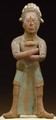

|  | Yucatán and Petén lowlands (Mexico) Island of Jaina (Maya) Whistle in the Form of a Dignitary A.D. 600-900 Ceramic and pigment 7-1/2 inches high, 3-1/4 inches wide, 2 inches deep The John R. Van Derlip Fund 47.2.5 |
This tiny (7-1/2-inch-high) CERAMIC figurine comes from Jaina, a small island just off the Yucatán coast in the Gulf of Mexico, slightly north of the city of Campeche. The island is a mysterious and world-renowned ARCHAEOLOGICAL site of the ancient Maya. It contains major burial grounds used for rulers and noble families from the mainland, perhaps because the location was thought to be sacred or favorable. Between the sixth and tenth centuries, over twenty thousand people were buried at Jaina in shallow pits. The corpses were either laid flat in the ground or arranged in a squatting or fetal position, with the knees drawn up to the chin. Pottery vessels, ornaments, necklaces, and one or more small figurines were buried with each body. Some of the finest figurines were placed inside large pottery jars used to INTER infants.1
Initially, a number of figurines from Jaina were excavated illegally by looters and sold through commercial markets. Today the site is protected, and recent archaeological EXCAVATIONS have revealed that numerous graves remain untouched. Those explored have yielded many of these delicate, sophisticated ceramic objects.
At its height, the Maya kingdom extended from the northern Yucatán peninsula to southern Central America. The Maya shared a common culture and religion, but existed as a system of separate city- states, each with its own ruler. The Late Classic Period (A.D. 600-900) is considered a time of cultural RENAISSANCE that gave rise to a great civilization in the New World comparable to that of Greece and Rome. The Maya possessed knowledge of astronomy and mathematics, had their own HIEROGLYPHIC system of writing, and maintained an accurate calendar according to seasonal agricultural cycles. They traded both UTILITARIAN and ORNAMENTAL pottery with their neighbors, while they looked to faraway nations for items they considered precious, such as jade, copper, and gold.2
Notes
1. Luis Aveleyra Arroyo de Anda and Gordon F. Eckholm, "Clay Sculpture from Jaina," Natural History 74, no. 4 (1966), pp. 313- 314.
2. Bradley Smith, Mexico: A History in Art (Garden City, N.Y.: Doubleday & Company, 1968), pp. 79-85.

Key ideas.
Where does it come from?
What does it look like?
How was it used?
How was it made?
Discussion questions.
Additional resources.
Select another piece.